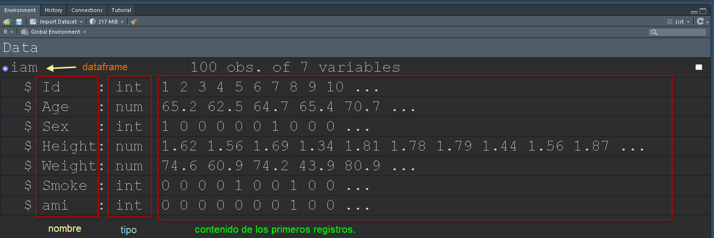

4 PR3-Manipulación de datos.
Recuerda siempre cómo “piensa” R.

5 Importación y manipulación de datos en R.
En la sección anterior hemos visto cómo importar datos y como transformarlos usando base R.
Si tienes problemas con la importación, echa un vistazo a las notas de la sesión anterior.
En esta sesión aprenderemos a manipular los datos para, por ejemplo, construir nuevas variables a partir de las originales. Lo haremos utilizando base R, pero también incluiremos al final cómo hacer lo mismo con modern R.
5.1 Importación de datos.
Antes de hablar de transformaciones, vamos a repasar las funciones que utilizamos para construir el dataframe.
iam<-read.csv('_data/myiam2.csv') # Utilizando relative path.Recuerde que la salidas de las funciones “read” suelen ser dataframes, y por ello podemos asignarlo directamente a un objeto, en el ejemplo el objeto (dataframe) llamado iam.
Primeras filas del dataframe.
head(iam) Id Age Sex Height Weight Smoke ami
1 1 65.24100 1 1.62 74.56 0 0
2 2 62.45461 0 1.56 60.89 0 0
3 3 64.68328 0 1.69 74.20 0 0
4 4 65.36045 0 1.34 43.92 0 0
5 5 70.71094 0 1.81 80.86 1 0
6 6 65.42030 0 1.78 80.56 0 0Estructura del dataframe (en realidad la puedes ver en la pestaña Environment del panel superior derecho [en esta configuración])
str(iam)'data.frame': 100 obs. of 7 variables:
$ Id : int 1 2 3 4 5 6 7 8 9 10 ...
$ Age : num 65.2 62.5 64.7 65.4 70.7 ...
$ Sex : int 1 0 0 0 0 0 1 0 0 0 ...
$ Height: num 1.62 1.56 1.69 1.34 1.81 1.78 1.79 1.44 1.56 1.87 ...
$ Weight: num 74.6 60.9 74.2 43.9 80.9 ...
$ Smoke : int 0 0 0 0 1 0 0 1 0 0 ...
$ ami : int 0 0 0 0 0 0 0 1 0 0 ...Recuerde que esta estructura también está visible si desplegamos el dataframe en la pestaña Environment, ventana data del panel superior derecho.

5.2 Manipulación de datos.
Antes de poder modificar variables existentes o crear algunas nuevas, necesitamos conocer algunas funciones y operadores básicos incluidos en la instalación básica de r.
5.2.1 Operadores.
| Operadores comparativos | Símbolo/instrucción |
|---|---|
| igualdad | == |
| desigualdad | != |
| menor | < |
| menor igual | <= |
| mayor | > |
| maryor igual | >= |
| Operadores lógicos | Símbolo/instrucción |
|---|---|
| AND lógica | & |
| OR lógica | | |
| negación lógica | ! |
| Identidad | && |
5.2.2 Funciones básicas.
| Operador/Función | Símbolo/instrucción |
|---|---|
| suma | + |
| resta | - |
| multiplicación | * |
| división | / |
| módulo | %% (resto de división) |
| división entera | %/% |
| raíz cuadrada | sqrt |
| logaritmo natural (base e) | log |
| logaritmos genérico (base->b) | logb (ex. log10(45)) |
| número e elevado a x | exp(x) |
| máximo | max |
| mínimo | min |
| rango | range |
| longitud | length |
| sumatorio | sum |
| productorio | prod |
| media | mean |
| mediana | median |
| desv. estándar | sd |
| varianza | var |
5.2.3 Manipulaciones más frecuentes.
Seguiremos utilizando el dataframe generado anteriormente llamado iam.
5.2.3.1 Recodificar en base a puntos de corte. (Convertir numérica en factor)
La función cut es muy útila para generar una variable categórica a partir de una cuantitativa discreta o continua. Solo necesitas que le entregemos el vector a cortar y los puntos de corte. Veamos un par de ejemplos.
Construiremos grupos de edad e intervalos de 10 años. El máximo de esta variable es 70.71 y el mínimo es 59.5, así pues nos hacen falta puntos de corte entre ambos valores con amplitud de 10 años.
iam$age5<-cut(iam$Age,seq(55,75,10),include.lowest = T,right = T) # la función seq nos facilita la tarea de construir el vector de puntos de corte.La propia función genera un factor (ya hablaremos de este tipo de objetos que servirán para almacenar variables categóricas )
Podemos construir una tabla para comprobar la distribución de la nueva variable categórica.
table(iam$age5)
[55,65] (65,75]
47 53 Como se puede observar, la propia función genera las etiquetas de los intervalos en función de los puntos de corte que le hemos dado. A tener en cuenta:
* La función *cut* tiene argumentos para poder construir los intervalos cerrando el intervalo por su límite derecho (argumento right=T) .
* la función *cut* genera un objeto de tipo vector y de clase factor, por lo que sus etiquetas de nivel se pueden modificar (lo veremos al hablar de factores).
* la función *cut* puede cerrar el intervalo inferior (argumento include.lowest=T)5.2.3.2 Construir variables operando otras.
En el dataframe iam se incluyen las variables peso y altura. Vamos a construir el Índice de Masa Corporal.
\[IMC=\frac{Peso (kg)}{Altura(m)^2}\]
iam$bmi<-iam$Weight/iam$Height^2Como se puede observar, para incluirla en el dataframe, hemos de indicárselo utilizando el nombre del mismo seguido de $ y el nombre que queremos dar a la nueva variable, en este caso bmi.
5.2.3.3 Recodificación.
Posiblemente una de las tareas más frecuentes, si no la más frecuente, manipulando datos es la recodificación, construir una variable categórica agrupando categorías de otra.
Para entender esta tarea en R, es útil entender la clase factor, la clase en la que vamos a almacenar las variables categóricas.
5.2.3.4 Factores ¿Qué es un factor en R?
Los factores son posiblemente uno de los elementos básicos en R que más cuesta entender. En mi opinión tiene que ver con la confusión entre el concepto de nivel (level) y la etiqueta (label) que se le asigna a cada uno de los niveles.
Para explicar cómo funciona, vamos a crear un ejemplo sencillo para ver cómo operan estas dos características.
Aunque parezca extraño, vamos a partir de un vector de tipo integer para posteriormente convertirlo en uno de tipo factor al que añadiremos las etiquetas.
- Construcción de un vector numérico.
x<-rep(0:1,25)- Conversión del vector en un factor, sin decirle nada más.
sex<-factor(x)Al utilizar la función factor, R lee el vector que recibe y, si no le decimos otra cosa, identifica los valores diferentes y los ordena en orden alfanumérico.
Acto seguido va asignado el nivel correspondiente a cada valor diferente, y utiliza el valor original para construir una etiqueta.
Lo que obtenemos es un vector de tipo factor que tiene niveles que van del 1 al número de valores diferentes que trajese la variable (el vector) original. Pero estos niveles están ocultos detrás de las etiquetas que se les asignan.
Lo importante es el nivel, pero su relación con la etiqueta asignada nos va a permitir recodificar variables utilizando las etiquetas que se les asignan.
Veamos un ejemplo.
El vector sex, creado con el código anterior, tiene dos niveles, 1 y 2, pero las etiquetas que fueron asignadas como indiqué, son “0” y “1”, valores originales del vector. Al no decirle lo contrario, usó el orden alfanumérico, por eso el 0 se asigna al primer nivel y el 1 al segundo nivel.
Si queremos ver los auténticos niveles que contiens podemos forzar una conversión de tipo de la siguiente manera:
sex [1] 0 1 0 1 0 1 0 1 0 1 0 1 0 1 0 1 0 1 0 1 0 1 0 1 0 1 0 1 0 1 0 1 0 1 0 1 0 1
[39] 0 1 0 1 0 1 0 1 0 1 0 1
Levels: 0 1as.numeric(sex) [1] 1 2 1 2 1 2 1 2 1 2 1 2 1 2 1 2 1 2 1 2 1 2 1 2 1 2 1 2 1 2 1 2 1 2 1 2 1 2
[39] 1 2 1 2 1 2 1 2 1 2 1 2Observe como el primer vector muestra las etiquetas, mientras que el segundo muestra los niveles.
En realidad podríamos haber impuesto nuestras etiquetas a dichos niveles en la propia creación del factor, pero para eso debemos entender que si no le decimos lo contrario, la identificación del orden de asignación sigue dependiendo del orden alfanumérico.
Para indicarle las etiquetas, basta con meter un vector con las etiquetas en el argumento labels.
En este ejemplo asumimos que el 0 es el valor con el que en la base de datos original se codificó Hombre y 1 el valor con el que se codificó Mujer.
sex2<-factor(x,labels = c('Hombre','Mujer'))sex2 [1] Hombre Mujer Hombre Mujer Hombre Mujer Hombre Mujer Hombre Mujer
[11] Hombre Mujer Hombre Mujer Hombre Mujer Hombre Mujer Hombre Mujer
[21] Hombre Mujer Hombre Mujer Hombre Mujer Hombre Mujer Hombre Mujer
[31] Hombre Mujer Hombre Mujer Hombre Mujer Hombre Mujer Hombre Mujer
[41] Hombre Mujer Hombre Mujer Hombre Mujer Hombre Mujer Hombre Mujer
Levels: Hombre Mujeras.numeric(sex2) [1] 1 2 1 2 1 2 1 2 1 2 1 2 1 2 1 2 1 2 1 2 1 2 1 2 1 2 1 2 1 2 1 2 1 2 1 2 1 2
[39] 1 2 1 2 1 2 1 2 1 2 1 2Como se puede observar, los niveles (1 y 2) siguen siendo los mismos, pero las etiquetas han cambiado.
También se obseva como cuando pedimos un vector de clase factor, debajo aparecen los niveles (Levels: Hombre Mujer) en el orden en que se asignan a los niveles subyacentes (1 y 2).
Imaginemos que por alguna razón hubiésemos querido que el primer nivel se asignase a Mujer aunque el código que se asignó en la base de datos original fue el superior (1). Podemos obligar a que la función lea los niveles como nosotros deseemos usando el argumento levels.
La posición que asignemos a los niveles tendrá importancia en la construcción de los modelos, puesto que, aunque se puede cambiar, la comparación que se establece por defecto es contra el nivel más bajo, que funcionará como nivel de referencia.
sex3<-factor(x,levels=c("1","0"))sex3 [1] 0 1 0 1 0 1 0 1 0 1 0 1 0 1 0 1 0 1 0 1 0 1 0 1 0 1 0 1 0 1 0 1 0 1 0 1 0 1
[39] 0 1 0 1 0 1 0 1 0 1 0 1
Levels: 1 0as.numeric(sex3) [1] 2 1 2 1 2 1 2 1 2 1 2 1 2 1 2 1 2 1 2 1 2 1 2 1 2 1 2 1 2 1 2 1 2 1 2 1 2 1
[39] 2 1 2 1 2 1 2 1 2 1 2 1Ahora los ceros (hombres), han sido asignados al nivel 2 y los unos (mujeres al nivel 1). Por supuesto podríamos haber colocado nuestras etiquetas en la propia creación, pero debemos tener en cuenta que hemos impuesto un nuevo orden a los niveles.
sex4<-factor(x,levels=c("1","0"),labels=c('Women','Men'))
sex4 [1] Men Women Men Women Men Women Men Women Men Women Men Women
[13] Men Women Men Women Men Women Men Women Men Women Men Women
[25] Men Women Men Women Men Women Men Women Men Women Men Women
[37] Men Women Men Women Men Women Men Women Men Women Men Women
[49] Men Women
Levels: Women Menas.numeric(sex4) [1] 2 1 2 1 2 1 2 1 2 1 2 1 2 1 2 1 2 1 2 1 2 1 2 1 2 1 2 1 2 1 2 1 2 1 2 1 2 1
[39] 2 1 2 1 2 1 2 1 2 1 2 1La informacion contenida en el vector no ha cambiado (donde había un Hombre ahora también, aunque con la etiqueta Men), pero el nivel asignado sí lo ha hecho.
¿Cómo saber los niveles que tiene un factor?
Mediante la función levels.
levels(sex4)[1] "Women" "Men" Como se puede observar, esta función devuelve un vector. Pues bien, podemos modificar dicho vector para cambiar las etiquetas del factor, siempre que tengamos claro el orden de los niveles.
levels(sex4)<-c('Mujer','Hombre')
sex4 [1] Hombre Mujer Hombre Mujer Hombre Mujer Hombre Mujer Hombre Mujer
[11] Hombre Mujer Hombre Mujer Hombre Mujer Hombre Mujer Hombre Mujer
[21] Hombre Mujer Hombre Mujer Hombre Mujer Hombre Mujer Hombre Mujer
[31] Hombre Mujer Hombre Mujer Hombre Mujer Hombre Mujer Hombre Mujer
[41] Hombre Mujer Hombre Mujer Hombre Mujer Hombre Mujer Hombre Mujer
Levels: Mujer HombreEs más, esta función nos permite recodificar los niveles de manera fácil como veremos posteriormente.
Podemos crear factores a partir de cualquier tipo de vector. De hecho, con frecuencia este vector es de tipo character, es decir que trae “puesta” la etiqueta.
Sí así fuera, basta con utilizar la función factor par construir el vector. Veamos un ejemplo.
Construiremos un vector de tipo character.
nse<-c(rep('NSE1',10),rep('NSE2',4),rep('NSE3',12),rep('NSE4',5))
# hay formas más elegantes de construir este vector, pero hacen falta funciones que aún no hemos visto.Como se puede ver, las palabras contenidas en el vector están entre comillas, lo que señala que se trata de cadenas de caracteres.
Conversión en factor asumiendo el orden alfanumérico de los valores diferentes dentro del vector.
nse_f<-factor(nse)
nse_f [1] NSE1 NSE1 NSE1 NSE1 NSE1 NSE1 NSE1 NSE1 NSE1 NSE1 NSE2 NSE2 NSE2 NSE2 NSE3
[16] NSE3 NSE3 NSE3 NSE3 NSE3 NSE3 NSE3 NSE3 NSE3 NSE3 NSE3 NSE4 NSE4 NSE4 NSE4
[31] NSE4
Levels: NSE1 NSE2 NSE3 NSE4Como se puede observar, la conersión en factor hace que tenga niveles (Levels: NSE1 NSE2 NSE3 NSE4) cuyo orden ha sido establecido por el orden alfanumérico de las cadenas de caracteres que contenía el vector.
Para que se entienda cómo actúa la conversión, vamos a construir un vector parecido pero en el que una de las cadenas no sigue el patrón NSE.
nse2<-c(rep('NSE1',10),rep('SNE2',4),rep('NSE3',12),rep('NSE4',5))
nse2 [1] "NSE1" "NSE1" "NSE1" "NSE1" "NSE1" "NSE1" "NSE1" "NSE1" "NSE1" "NSE1"
[11] "SNE2" "SNE2" "SNE2" "SNE2" "NSE3" "NSE3" "NSE3" "NSE3" "NSE3" "NSE3"
[21] "NSE3" "NSE3" "NSE3" "NSE3" "NSE3" "NSE3" "NSE4" "NSE4" "NSE4" "NSE4"
[31] "NSE4"Este vector es parecido al nse, solo cambia la cadena de 4 elementos, que ahora es SNE2 en vez de NSE2.
Al transformarlo en factor:
nse2_f<-factor(nse2)
nse2_f [1] NSE1 NSE1 NSE1 NSE1 NSE1 NSE1 NSE1 NSE1 NSE1 NSE1 SNE2 SNE2 SNE2 SNE2 NSE3
[16] NSE3 NSE3 NSE3 NSE3 NSE3 NSE3 NSE3 NSE3 NSE3 NSE3 NSE3 NSE4 NSE4 NSE4 NSE4
[31] NSE4
Levels: NSE1 NSE3 NSE4 SNE2…podemos ver como SNE2 se ha colocado en el cuarto nivel, que es el que le corresponde al ordenar alfabéticamente los niveles diferentes (valores diferentes en el contenido) detectados por la función.
Esto no afecta a la información en sí misma, pues la etiqueta signada al nivel 4 estará allá donde el vector de caracteres incluyera “SNE2”.
En realidad podríamos haberlo evitado indicando la colocación de los niveles.
nse2_f2<-factor(nse2,levels = c('NSE1','SNE2','NSE3','NSE4'))
nse2_f2 [1] NSE1 NSE1 NSE1 NSE1 NSE1 NSE1 NSE1 NSE1 NSE1 NSE1 SNE2 SNE2 SNE2 SNE2 NSE3
[16] NSE3 NSE3 NSE3 NSE3 NSE3 NSE3 NSE3 NSE3 NSE3 NSE3 NSE3 NSE4 NSE4 NSE4 NSE4
[31] NSE4
Levels: NSE1 SNE2 NSE3 NSE45.2.3.5 Recodificación.
La recodificación es fácil cuando se hace sobre el factor, porque basta con reasignar las etiquetas a los niveles. Esta relación entre levels y labels es la que, en mi opinión, genera más confusión a la hora de entender los factores.
Vamos a recodificar el vector nse_f (el primer factor que generamos) agrupando los niveles 2 y 3.
#Crearemos una copia para no perder el anterior y poder comparar los efectos.
nse_f_rec<-nse_f
nse_f_rec #Vemos que es el mismo vector. [1] NSE1 NSE1 NSE1 NSE1 NSE1 NSE1 NSE1 NSE1 NSE1 NSE1 NSE2 NSE2 NSE2 NSE2 NSE3
[16] NSE3 NSE3 NSE3 NSE3 NSE3 NSE3 NSE3 NSE3 NSE3 NSE3 NSE3 NSE4 NSE4 NSE4 NSE4
[31] NSE4
Levels: NSE1 NSE2 NSE3 NSE4levels(nse_f_rec) #Preguntamos por los niveles.[1] "NSE1" "NSE2" "NSE3" "NSE4"as.numeric(nse_f_rec) # visualizamos los niveles subyacentes. [1] 1 1 1 1 1 1 1 1 1 1 2 2 2 2 3 3 3 3 3 3 3 3 3 3 3 3 4 4 4 4 4Cambiamos los niveles actuando sobre las etiquetas de nivel. Confunde, porque parece que solo estamos cambiando la etiqueta y que por debajo permanecerán los cuatro niveles, pero…
levels(nse_f_rec)<-c('NSE1','NSE2_3','NSE2_3','NSE4')
levels(nse_f_rec) # No solo son tres etiquetas.[1] "NSE1" "NSE2_3" "NSE4" as.numeric(nse_f_rec) [1] 1 1 1 1 1 1 1 1 1 1 2 2 2 2 2 2 2 2 2 2 2 2 2 2 2 2 3 3 3 3 3Podemos ver cómo ha ido la recodificación construyendo una tabla de contingencia con los dos vectores.
table(nse_f_rec,nse_f) nse_f
nse_f_rec NSE1 NSE2 NSE3 NSE4
NSE1 10 0 0 0
NSE2_3 0 4 12 0
NSE4 0 0 0 5Es importante tener en cuenta que esta acción ya no puede ser deshecha; no podemos volver al vector que los tenía separados si no contamos con el original o versiones previas del que hemos destruido al generar el nuevo.
Por un método parecido podemos reordenar los niveles para que el nivel de referencia sea el que deseemos.
En el siguiente ejemplo vamos a conseguir que sea el NSE4 el nivel de referencia.
nse_f_rec<-relevel(nse_f_rec,ref = 'NSE4') # Para entregárselo, de nuevo le indicamos la etiqueta de nivel.
nse_f_rec [1] NSE1 NSE1 NSE1 NSE1 NSE1 NSE1 NSE1 NSE1 NSE1 NSE1
[11] NSE2_3 NSE2_3 NSE2_3 NSE2_3 NSE2_3 NSE2_3 NSE2_3 NSE2_3 NSE2_3 NSE2_3
[21] NSE2_3 NSE2_3 NSE2_3 NSE2_3 NSE2_3 NSE2_3 NSE4 NSE4 NSE4 NSE4
[31] NSE4
Levels: NSE4 NSE1 NSE2_3En realidad podríamos haberlo conseguido con la propia función factor.
factor(nse_f_rec,levels=c('NSE1','NSE2_3','NSE4')) # no lo asignamos al objeto para poder seguir utilizándolo posteriormente. [1] NSE1 NSE1 NSE1 NSE1 NSE1 NSE1 NSE1 NSE1 NSE1 NSE1
[11] NSE2_3 NSE2_3 NSE2_3 NSE2_3 NSE2_3 NSE2_3 NSE2_3 NSE2_3 NSE2_3 NSE2_3
[21] NSE2_3 NSE2_3 NSE2_3 NSE2_3 NSE2_3 NSE2_3 NSE4 NSE4 NSE4 NSE4
[31] NSE4
Levels: NSE1 NSE2_3 NSE4Es importante introducir bien las etiquetas porque de lo contario asignara NA (missing). Un ejemplo introduciendo un error en la primera etiqueta.
factor(nse_f_rec,levels=c('NSE','NSE2_3','NSE4')) # no lo asignamos al objeto para poder seguir utilizándolo posteriormente. [1] <NA> <NA> <NA> <NA> <NA> <NA> <NA> <NA> <NA> <NA>
[11] NSE2_3 NSE2_3 NSE2_3 NSE2_3 NSE2_3 NSE2_3 NSE2_3 NSE2_3 NSE2_3 NSE2_3
[21] NSE2_3 NSE2_3 NSE2_3 NSE2_3 NSE2_3 NSE2_3 NSE4 NSE4 NSE4 NSE4
[31] NSE4
Levels: NSE NSE2_3 NSE4Para facilitar la tarea hemos utilizado la función factor para “contener” una variable ordinal. En realidad R tiene una función específica para este tipo de factores ordenados (función ordered, o también función factor con argumento ‘ordered=T’), y algunas funciones son capaces de “entender” que se trata de una categórica ordinal y tratarla como tal.
En cualquier caso no es esencial y se puede hacer que la función lo entienda como ordinal utilizando otras opciones al construir el modelo.
Como lo hemos mencionado, insertaré aquí un ejemplo de esta función.
ordered(nse) [1] NSE1 NSE1 NSE1 NSE1 NSE1 NSE1 NSE1 NSE1 NSE1 NSE1 NSE2 NSE2 NSE2 NSE2 NSE3
[16] NSE3 NSE3 NSE3 NSE3 NSE3 NSE3 NSE3 NSE3 NSE3 NSE3 NSE3 NSE4 NSE4 NSE4 NSE4
[31] NSE4
Levels: NSE1 < NSE2 < NSE3 < NSE4nse_of<-factor(nse,ordered = T)Como se observa, Levels indica la relación entre niveles, y podemos utilizarlos para darle la vuelta a la relación de los niveles del factor.
factor(nse,levels=c('NSE4','NSE3','NSE2','NSE1'),ordered = T) [1] NSE1 NSE1 NSE1 NSE1 NSE1 NSE1 NSE1 NSE1 NSE1 NSE1 NSE2 NSE2 NSE2 NSE2 NSE3
[16] NSE3 NSE3 NSE3 NSE3 NSE3 NSE3 NSE3 NSE3 NSE3 NSE3 NSE3 NSE4 NSE4 NSE4 NSE4
[31] NSE4
Levels: NSE4 < NSE3 < NSE2 < NSE1Todo esto está realizado con funciones básicas de R, lo que llamamos base R. En la realidad, se utiliza lo que se ha dado en llamar modern R, que automatiza y amplía las posibilidades de estas operaciones de gestión de datos.
Sin embargo, en mi experiencia, no entender cómo piensa R (indexación de vectores, matrices y dataframes, utilización de factores, tipos de vector…), hace más difícil resolver los problemas que surjan al utilizar enfoques más eficientes (modern R), pero más complejos.
Algo semejante pasará con los gráficos. R base construye buenos gráficos, y aunque permiten mucha personalización, hacerlo conlleva mucho código. El paquete ggplot2 facilita mucho la tarea de construcción de gráficos una vez se entiende ‘the Grammar of Graphics’ pero, para aprovechar su potencial al máximo, es útil entender como crear gráficos sencillos en R base, aunque debo reconocer que no todos los que nos dedicamos a la enseñanza estamos de acuerdo en esta cuestión.
5.3 Guardar los datos para la siguiente sesión.
Una vez hemos trabajado los datos en R, no tendría mucho sentido volver a exportarlos con las nuevas variables creadas, salvo que deseemos enviárselo a alguien que no utilice R o no pueda importar su formato de datos.
Podríamos guardar toda la imagen del espacio de trabajo (Workspace) y cargarla antes de trabajar con el nuevo dataframe en la siguiente sesión.
Sin embargo, y aunque cueste entenderlo al principio, es preferible guadar la menor cantida de objetos posibles y tratar de que sea el código el que lo construya cada vez. Si el objeto es muy grande o lleva mucho tiempo volver a generarlo con código, puede estar justificado guardar el o los objetos concretos.
En el caso del dataframe tenemos una estructura de datos que le sirve a R para gestionar esta parte. Son los archivos .RDS.
En este vínculo explican las dos opciones, pero de momento prefiero utilizar un archivo .RDS. Solo necesita un par de argumentos, el nombre del objeto dataframe que queremos guardar y el nombre del archivo en el que queremos guardarlo.
El dataframe que nos interesa es iam, porque contiene las nuevas variables y las transformaciones que hemos realizado. Incluyo los nombres de los argumentos, pero dado que son los dos primeros en realidad no haría falta1.
saveRDS(object=iam,file='iam.RDS')Es importante que lo salvéis, porque lo cargaremos en la siguiente sesión. Así no tendremos que volver a generar todas las funciones de nuevo.
Recordad lo que comenté en la sesión anterior sobre las posiciones relevantes al llamar a las funciones↩︎